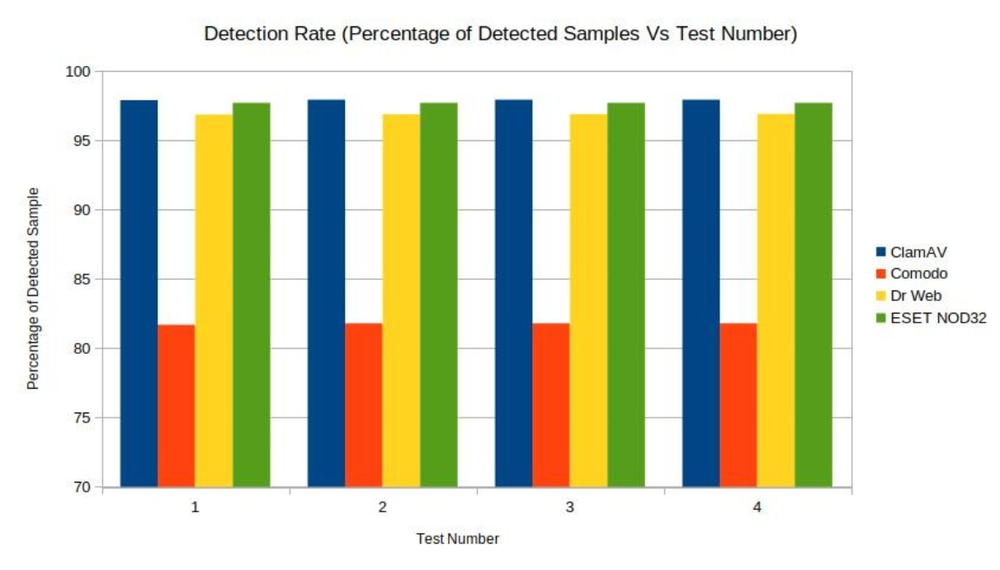

The initial migration from closed-source software to open-source software is one of the greatest hurdles for the EU’s government sectors making the leap. During the move the city of Munich intended to “clean up the uncontrolled growth in departments and applications in one go” (Euskirchen). “Over 10 years” roughly “14,000 desktop machines” were using around “300 various products” and ”170 custom-made applications” had to be switched over and redesigned for Linux. The switch costed “a minimum of EUR 15.52 million” in comparison to the “EUR 11 million, which it would have cost with Microsoft” (Silic).
Of the countries who can even afford a 40% increase in operating cost over the time it takes for adoption, many governments will question if the long-term benefits are even worth it. However, this number would likely be much lower if the IT department was not also tasked with cleaning up the technical debt and optimizing the software in the transition. Switching to Linux was already a daunting task, adding another layer at the same time made the transition harder than it needed to be. Not only was this costly in both time, money, but it was also costs employees patience.
Employees need to be trained to adopt to the new Linux ecosystem compared to their previous work machines. By 2015, a couple years after the completion of the project, “two CSU-run councils (Christian Social Union in Bavaria)” cited “Awkward to use, incompatibilities, and a lack of user rights” as well as an inability to install insecure software such as “Skype” as reasons that prevented “normal use”. The city in 2017 returned to Microsoft Windows (Euskirchen). Despite the questionable validity of these arguments, the fact remained that a large portion of the government were dissatisfied with their experience on Linux.
The move to a whole new operating system is stressful and was arguably the number one reason why this project failed. It did not help that the policies around user rights and installed apps were changed during the swich to further the purposes of security and sovereignty. Changing so much at once for the employees can actively hurt workflows in a way some simple training cannot fix. While 14 years may seem a lot, to adapt such an untested technology at that scale, in hindsight it was not near enough. The change to more secure software and better security practices should have started where possible when the employees were still on windows.
The better security practices, while may have turned users off, were necessary to avoid malware. While not as plentiful as on Windows, plenty of malware exists for Linux. The switch to Linux, shifts more of the responsibility of security to the user due to the open-source model. The responsibility to audit code not only falls on the maintainer, but also the user. If your system gets infected, there are no companies to take responsibility.
However, there are plenty of tools a government sector could use to make their systems more secure. Limiting user permissions is the easiest way to limit the effectiveness of malware. If the malware cannot be executed by the user, then it ceases to be harmful. While not as common as Windows, effective anti-virus software does exist on Linux as seen in Figure 1. Another commonly used tool is more community focused. Bug bounties offer rewards to people who report vulnerabilities in software that malware exploits. The idea is offloading a large part of security auditing to the community. It is not a complete replacement for first party security audits, but bug bounties help cover blind spots missed by initial audits.
Detection rate chart of common Linux anti-virus software

by Raffa, Giuseppe. (2021). Detection Rate (Percentage of Detected Samples Vs Test Number)[PNG]. Royal Holloway. https://www.royalholloway.ac.uk/media/16565/techreport-giusepperaffa.pdf
Made 1 March 2021thanks to W3C for tutorial and adapted code from Style Examples
also thanks to WDN for HTML and CSS resources and any adapted code snippets from Mozilla Developer Network